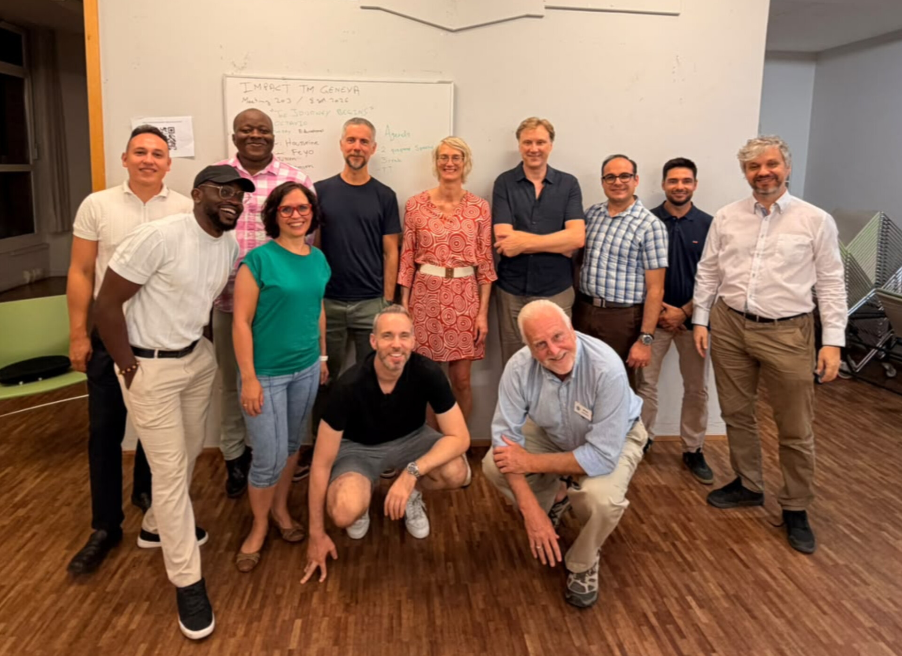

Prepared speeches
Club members share a speech they have worked on.
Speeches are delivered in a typical meeting. Guests are welcome to listen and learn from the experience.
ABOUT IMPACT
“There are always three speeches, for every one you actually gave.
The one you practiced, the one you gave, and the one you wish you gave.”
— Dale Carnegie

Impact Toastmasters Geneva brings together people who want to express themselves more clearly, speak with greater confidence and develop their leadership skills.
We learn by delivering speeches, trying impromptu speaking, taking meeting roles and exchanging constructive feedback. You don’t need to arrive as a confident speaker. You come to practise becoming one.
Our club was chartered on 2 March 2017 and is part of Toastmasters International, a nonprofit educational organisation focused on communication and leadership.
INSIDE A TYPICAL MEETING
Club members share a speech they have worked on.
Speeches are delivered in a typical meeting. Guests are welcome to listen and learn from the experience.
Table Topics offers short, spontaneous speaking opportunities. Guests can join in when comfortable.
Evaluators highlight strengths and suggest practical ways to improve.
Meet people, exchange ideas and enjoy meaningful conversations!
YOUR LEARNING JOURNEY
Toastmasters’ Pathways education programme gives members a structured way to develop communication and leadership skills. Club meetings are where you put that learning into practice.
When you join, talk with the club team about your goals and how to get started.
Explore membershipGROWING TOGETHER, ONE SPEECH AT A TIME
OUR ACHIEVEMENTS
From individual contest success to collective club achievements, these milestones reflect the practice and encouragement we share.
Tara Gopal Chattopadhyay won the District 109 Evaluation Contest in Malta in May 2025, representing Impact Toastmasters Geneva.
See the contest results ↗Toastmasters International recognised Impact in its 2023 Talk Up Toastmasters report, recording five new members and an award for the club.
View the award report ↗Impact Toastmasters Geneva earned Select Distinguished status in 2025–2026, achieving seven goals in the Distinguished Club Program. The final report also confirms that the Club Success Plan requirement was met.
View the 2025–2026 club report ↗Franklin Javier received the Respect Core Value Award for the District 109 2025–2026 term.
Selected highlights from our club’s story. More member achievements and club milestones will be added as our archive grows.
YOUR NEXT CHAPTER
A new room. A warm welcome. A chance to find your voice.